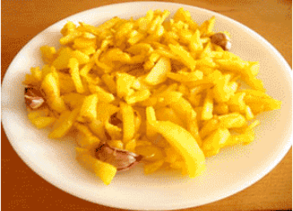

Patatas Fritas
Receta de patatas fritas caseras

Ingredientes
3 ó 4 patatas (300 g).
4 dientes de ajo
Aceite de Oliva
Sal
Elaboracion (Pasos)
- Calentar aceite en una sartén.
- Añadir las patatas cortadas, la sal y los ajos.
- Freir al gusto.
- Servir en Plato.